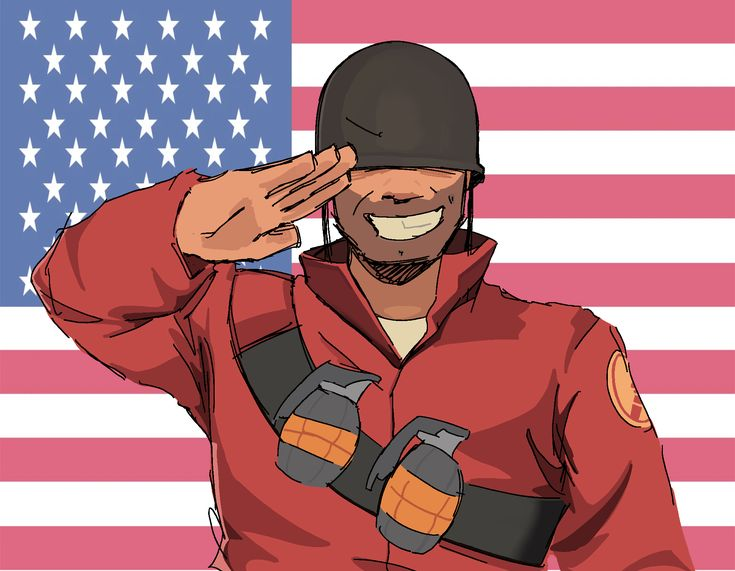

Origen: Midwest, EE. UU.
Salud: 200 HP
Velocidad: 80%
El Soldado es un patriota chovinista y fanático del Medio Oeste de Estados Unidos , que se hace pasar por militar a pesar de haber sido rechazado por el Ejército estadounidense. Fuerte y bien armado, es una clase versátil , capaz tanto de atacar como de defender, y una excelente opción para empezar a familiarizarse con el juego. Equilibrado y con gran capacidad de supervivencia y movilidad, el Soldado es considerado una de las clases más versátiles de Team Fortress 2. A pesar de su baja velocidad de movimiento en tierra, puede usar el salto con cohete para llegar rápidamente a su destino. Su gran cantidad de salud solo es superada por la del Heavy , y su amplio arsenal le permite llevar el arma o el equipo más adecuado para cada situación.
